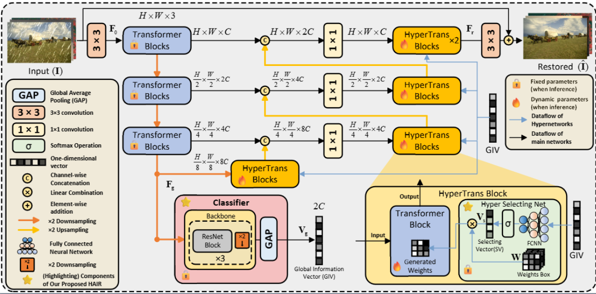

arXiv 2026
About· 01 ·
I'm Jin Cao, a Computer Science PhD student at UT Austin, advised by Prof. Qixing Huang and Prof. Georgios Pavlakos. During my undergraduate, I was fortunate to collaborate with Prof. Jiajun Wu and Koven Yu from Stanford, Prof. Sida Peng and Prof. Xiaowei Zhou from ZJU3DV, Zhejiang University, Dr. Kaipeng Zhang from Alaya Lab, Shanda AI, and Prof. Xiangyong Cao and Prof. Deyu Meng from Xi'an Jiaotong University.
My research interest is to build virtual worlds that digitalize the physical world and enable downstream applications such as entertainment and robotics.
Toward this goal, I focus on learning world representations from multi-modal data and building generative models on top of them.
Recently, I have been interested in long-context generative world modeling, physically-grounded generation, and controllable generation in support of this goal.
I'm actively looking for long-term industry collaborations and internships. If you have relevant opportunities or resources, I'd love to connect — xjincaox@gmail.com.
News· 02 ·
- I will join UT Austin as a CS Ph.D. student, if the visa goes well (I hope so 🙏)
- WonderZoom is accepted by CVPR 2026! 🎉 Hope my visa goes well so I can see you in Denver! 🥺
- One paper is accepted by ICCV 2025. But can't see you in Hawaii since my visa is going to expire. 😭
- I join Stanford Vision and Learning Lab as an intern, working with Koven Yu. 🎓
- I join ZJU3DV as an intern, working with Prof. Sida Peng. 🎓
Selected Publications· 03 ·


ICCV 2025
UniVerse: Unleashing the Scene Prior of Video Diffusion Models for Robust Radiance Field Reconstruction



* indicates equal contribution. See the full list on Google Scholar.
Education· 04 ·
The University of Texas at Austin
Ph.D. in Computer Science, advised by Prof. Qixing Huang and Prof. Georgios Pavlakos

Xi'an Jiaotong University
Undergraduate in Computer Science
Special Class for the Gifted Young 少年班
China's elite program for gifted youth — top 13 / 235, direct admission to undergraduate.
Experience· 05 ·
Alaya Lab, Shanda AI
Research Intern with Dr. Kaipeng Zhang · Dynamics Representation Learning & Controllable Video Generation
Stanford Vision and Learning Lab (SVL)
Research Intern with Koven Yu and Prof. Jiajun Wu · Iterative 3D Scene Generation
ZJU3DV, Zhejiang University
Research Intern with Prof. Sida Peng and Prof. Xiaowei Zhou · Robust Radiance Field Reconstruction
Xi'an Jiaotong University
Research with Prof. Xiangyong Cao and Prof. Deyu Meng · Low-Level Image Processing (Super Resolution, Dehazing)